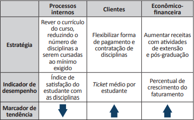
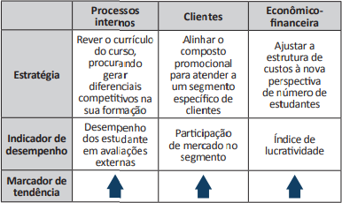

Segundo dados do Censo da Educação Superior, observa-se, nos últimos anos, um aumento do número de Instituições de Educação Superior privadas no Brasil.
Nessa nova realidade, o aumento da concorrência, aliado à redução gradativa do número de estudantes ingressantes no curso de Administração ano a ano, levou uma instituição que opera no ensino superior privado há mais de 30 anos, com ofertas de formação estritamente na modalidade presencial, a rever sua atuação. Após uma análise ambiental detalhada, a instituição optou por utilizar nesse curso uma estratégia genérica de diferenciação de produto. Nessa mesma linha, por entender que não teria condições de criar um diferencial competitivo nas ofertas de curso a distância, já que seria um entrante tardio nesse mercado, a instituição optou por manter suas ofertas exclusivamente na modalidade presencial. Com base nisso, elaborou um planejamento estratégico para reformular o curso de acordo com esse direcionamento.
Com base no texto, assinale a opção em que as informações apresentadas no quadro são coerentes com a estratégia genérica definida pela instituição.